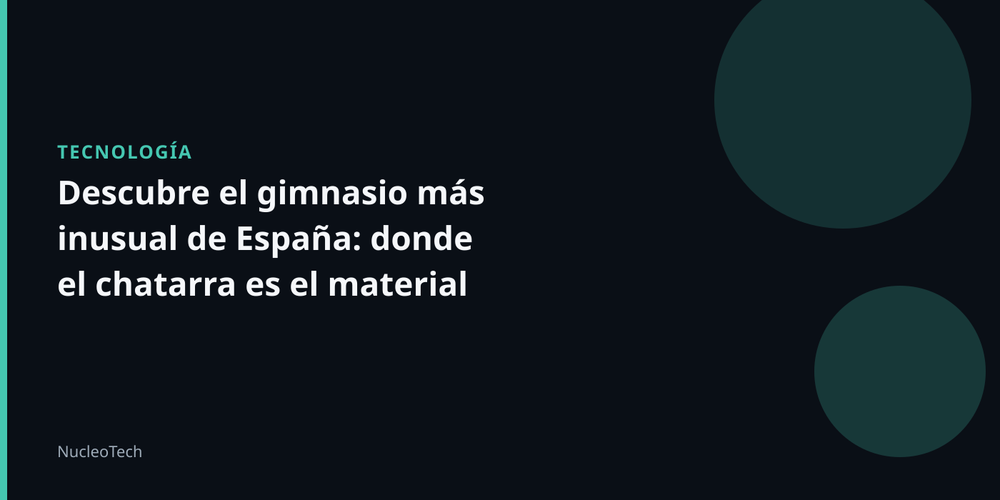

Un gimnasio al aire libre con un toque de innovación
En la comarca de la Maragatería, un pueblo llamado Valdespino de Somoza cuenta con un gimnasio ecológico que ha dejado a muchos sorprendidos. El invento, que ha sido bautizado como el "gimnasio de los Picapiedra", es una experiencia única que combina el ejercicio con la sostenibilidad.
La idea detrás de este gimnasio es ofrecer una alternativa gratuita y al aire libre para aquellos que buscan hacer ejercicio sin tener que pagar una mensualidad. Los equipos de fitness están hechos con chatarra, palos y piedras, lo que les da una apariencia única y un toque de innovación.
Según los propietarios del gimnasio, esta forma de construcción no solo es sostenible, sino que también es más duradera que las opciones tradicionales. Además, el hecho de que el gimnasio esté al aire libre le da una sensación de libertad y frescura a sus usuarios.
En este sentido, el "gimnasio de los Picapiedra" se convierte en una experiencia que va más allá del ejercicio físico y se vuelve una forma de conectar con la naturaleza y con la comunidad. Los usuarios pueden disfrutar del paisaje y de la compañía de otros while realizan sus ejercicios, lo que les da una sensación de bienestar y felicidad.
En resumen, el gimnasio de los Picapiedra es una innovación que combina el ejercicio con la sostenibilidad y la naturaleza, ofreciendo una experiencia única y atractiva para aquellos que buscan hacer ejercicio de manera diferente.
Ventajas de este tipo de gimnasio
- Es gratuito y al aire libre
- Los equipos están hechos con chatarra, palos y piedras, lo que es sostenible y duradero
- Ofrece una sensación de libertad y frescura
- Permite conectar con la naturaleza y con la comunidad